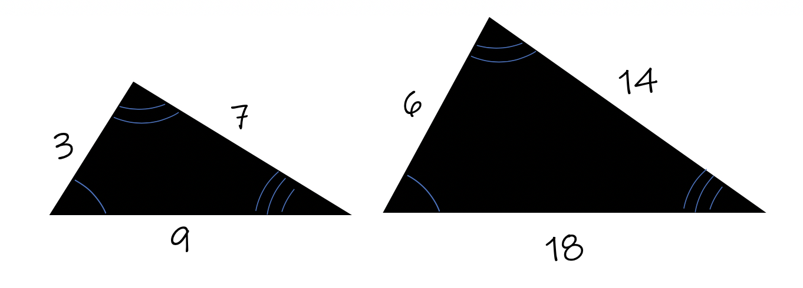
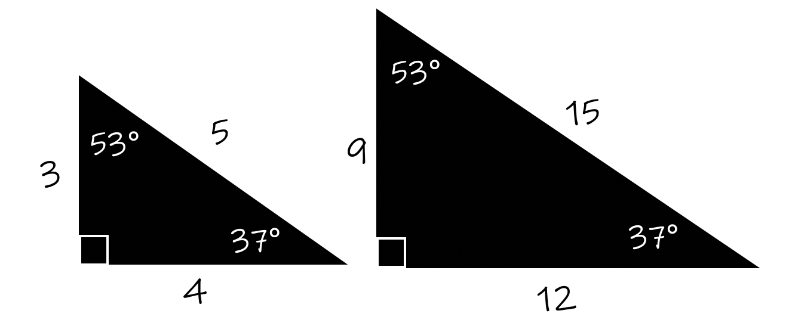
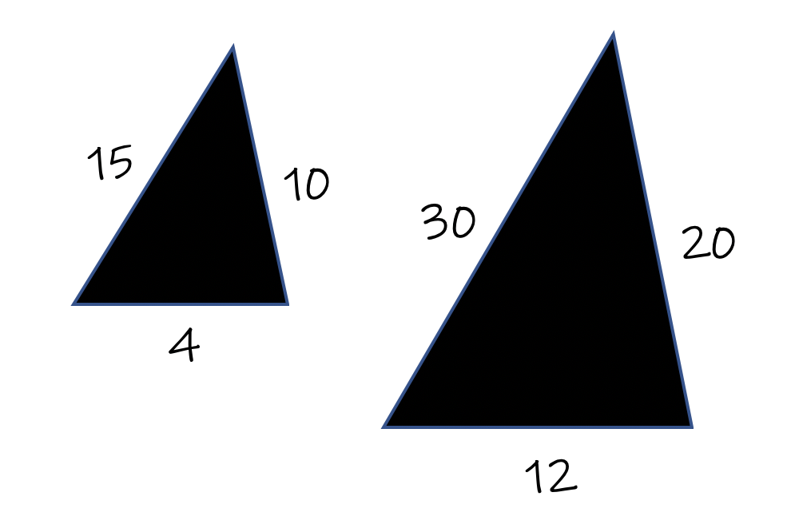

Two figures are called "Similar" if they are the same shape but different sizes.
We see this everyday in the world around you, from shirt sizes, to shoe sizes, to athletic emblems to pictures, and so on.
Rule: In Geometry, the concept of Similar must meet 2 criteria: all corresponding angles must be the same degrees, and each pair of corresponding sides must be the same multiple of eachother.
The following shows images of similar and not-similar triangles.
 These 2 triangles are similar because they meet both criteria of similar figures: each pair of corresponding sides has been multiplied by 2, and each pair of corresponding angles are congruent.
The value of 2 is called a "scale factor". It is the number that we increased the scale of the two triangles by when taking triangle #1 and increasing its size to create triangle #2.

In image 2, we can see each pair of sides has been multilpied by a scale factor of 3, and each pair of corresponding angles are congruent. Therefore, these two triangles are similar.
Rule: For 2 polygons to be considered similar,
Angles must be corresponding and congruent.
Corresponding sides must have the same scale factor.
Both criteria must be met to be considered similar.

These two triangles are not similar. There are no angle arcs or degrees in the angles, therefore the angles that are corresponding are not congruent. There are also two different scale factors for the pair of triangles. Two pair of sides have been multiplied by 2, the other pair of sides, 3.
These two triangles are not similar.
Rule: Determining if two figures are similar or not can not be done by just looking at the two triangles and deciding if they are the same shape. You must check mathematically as shown in the lesson because the figures are not drawn to scale. Meaning if you were to draw the figures to scale using a ruler and protractor, they would look nothing like your drawing. That is what "not drawn to scale" means.